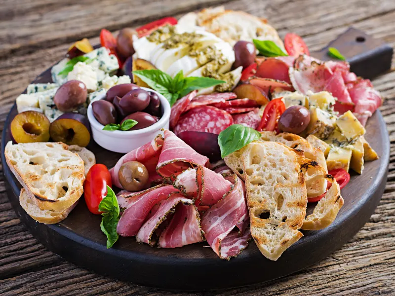

Antipasti

Les antipasti sont une spécialité de la cuisine italienne servie en début de repas, avant l'entrée. La recette d’aujourd’hui sera à base de tomates et de mozzarella.
Les ingrédients pour faire une antipasti simple
- 1 aubergine assez fine
- 3 tomates
- 2 mozzarella
- 1 petit verre d'huile d'olive
- sel
- 2 poivrons rouges
- 1 basilic
Les étapes pour faire un antipasti
- Coupez l'aubergine en rondelles dans la largeur. Faites dégorger les rondelles avec du sel.
- Coupez les poivrons en carrés d'environ 6 cm et passez-les au four (120°C/thermostat 4) après les avoir salés et recouverts d'un gros filet d'huile d'olive. Laissez-les cuire jusqu'à ce qu'ils deviennent mous.
- Laissez reposer les poivrons cuits et remplacez les dans le four par les rondelles d'aubergine, selon le même modèle, puis successivement par les tomates coupées en quartier.
- Une fois que les 3 légumes sont cuits, préparez la sauce : mixez le bouquet de basilic frais (gardez quelques petites feuilles de côté pour la décoration finale) avec le verre d'huile d'olive et du sel.
- La sauce doit être à dominante verte.
- Laissez-la refroidir 10 minutes au réfrigérateur.
- Pendant ce temps, dressez les assiettes : le nombre de tours par assiette variera selon la grosseur de vos légumes !
- Commencez par une des plus grosses rondelles d'aubergine que vous recouvrez par un poivron, puis une tomate, puis une rondelle de mozzarella, puis empilez à nouveau une aubergine (plus petite), un poivron, une tomate, une mozzarella. Finissez la avec un petit chapeau (les plus petits morceaux des légumes).
- Vous pouvez faire grimper vos tours ou les réduire d'un niveau, sachant que plus elles sont hautes plus elles seront difficiles à manger !
- Une fois toutes les tours dressées, nappez les chacune d'un bon filet de sauce. Pour finir, déposez délicatement une mini feuille de basilic sur le dessus de chaque tour.